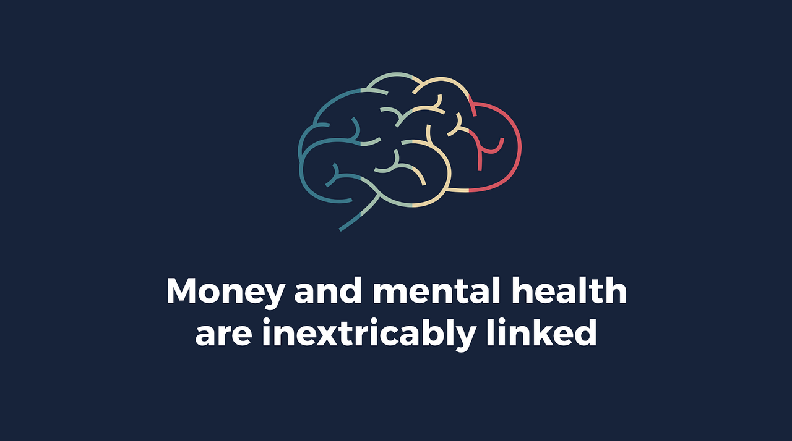
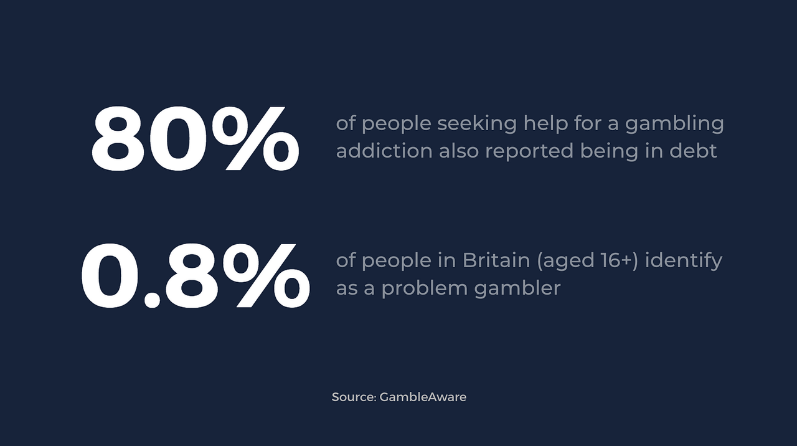
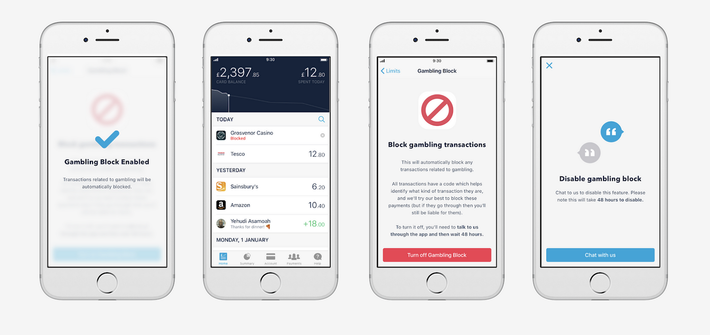
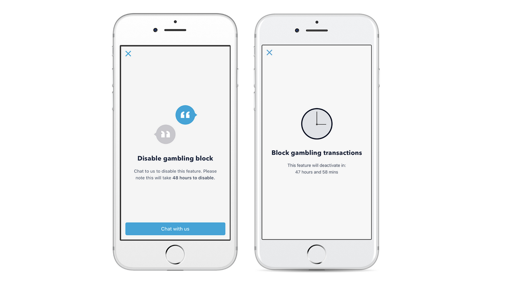
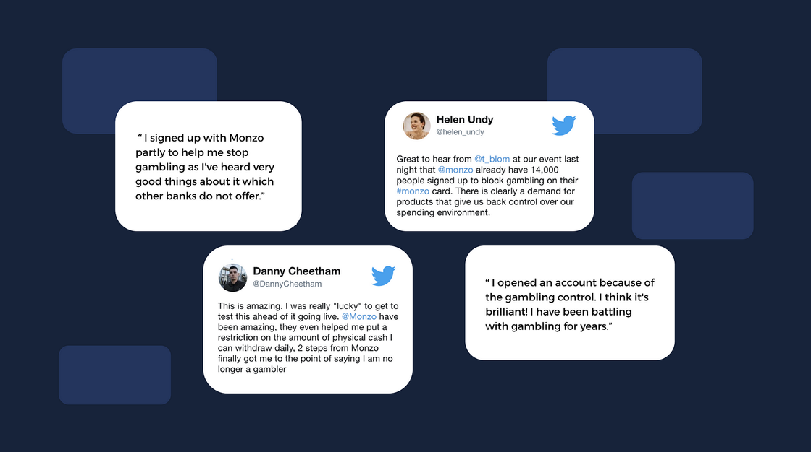
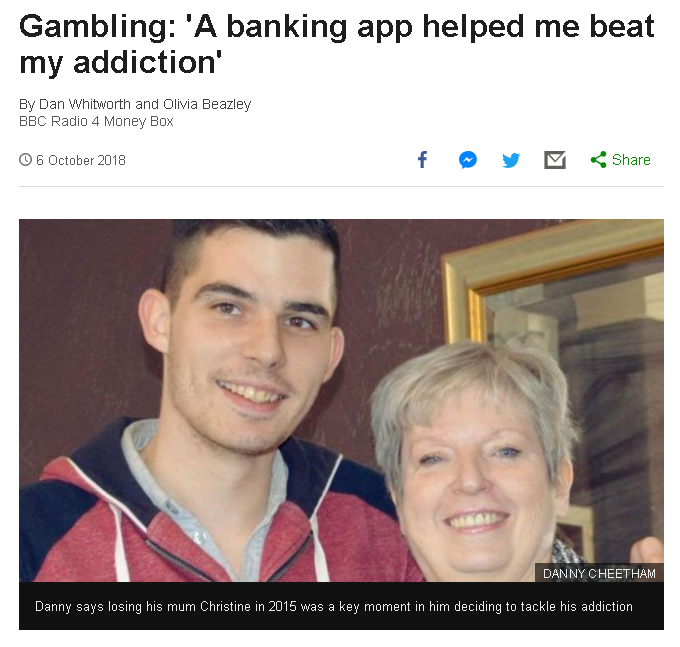
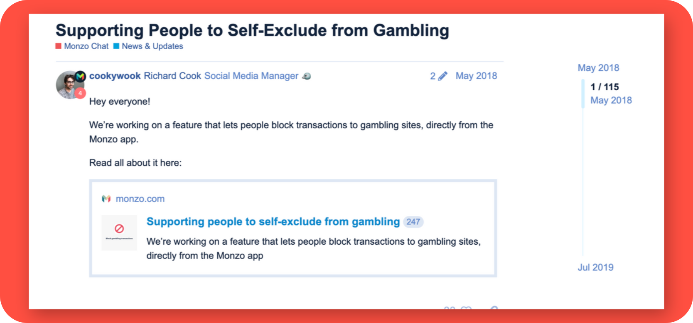
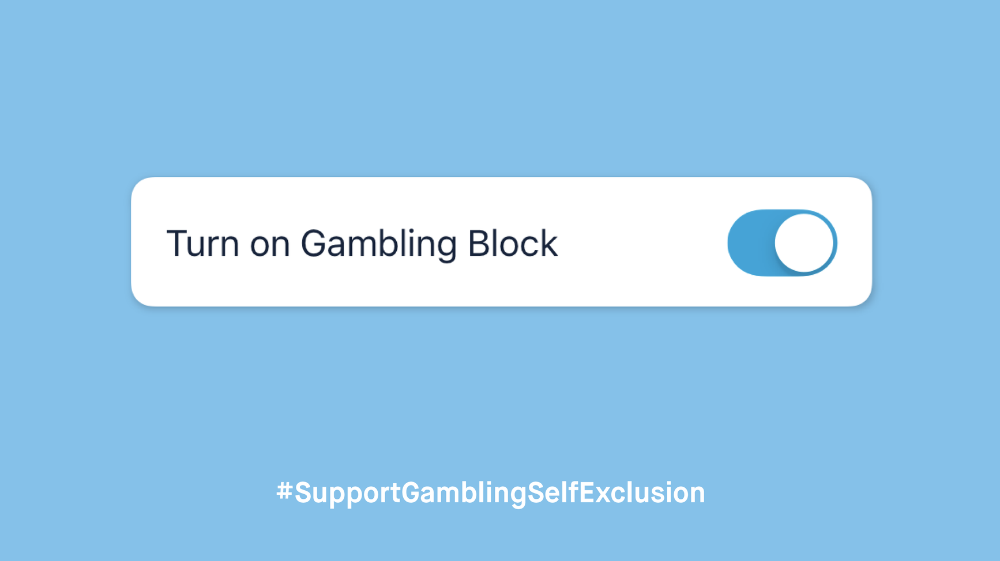

Summary
In 2018, I worked alongside the Vulnerable Customer Team and a small team of enthusiastic people to research, develop, and launch a feature that allows Monzo customers to block gambling transactions. It was the first of its kind, offering a friction-based banking tool to help people with gambling addiction to self-exclude. Now, around 90% of banks offer this feature, and over 700K Monzo customers have used it.
Money and mental health
For all of you who are familiar with consumer products, you know how easily they can reach and influence millions of people’s experiences by leveraging our psychological vulnerabilities.
As designers, we have a responsibility to make sure we build products that are suitable for everyone.

Your mental health can have a huge impact on your money, and the other way around. For example, 1 in 4 people with mental health issues are also likely to have problems with debt, compared to 1 in 10 people who don’t. And one of the most common ways that mental health issues and money problems intersect is gambling.

This means it’s likely that more than 15% of Monzo customers are affected by a gambling problem.
Problem gambling is an addiction that can cause uncontrollable debt and seriously affect people’s mental health.
We built a feature to block gambling spending
For people who struggle to limit their gambling, the most effective way to stop can be to self-exclude. You can use software to block online gambling sites, and betting shops are required to support self-exclusion in person too. But we believe that banks can do more to support self-exclusion in a clever way.
That’s why we’ve implemented a self-exclusion tool within the app that people can turn on to block gambling transactions on their Monzo account.

By letting people manage their self-exclusion directly from their bank account, we can give them more ownership over their recovery. And if our goal is to give people better control over how they spend their money, that also includes giving the option to choose how not to spend it.
Once the feature is on, any payments you try to make to gambling merchants through Monzo, online and in person, will be blocked. We’re able to do this by identifying the type of merchant.
And we added positive friction
Choosing to gamble again can be an impulsive decision. So we wanted to prevent people from switching off the gambling block easily. We wanted to encourage them to think thoroughly about their decision and all the possible implications.
This is why we thought about adding some elements of positive friction.
Technology often seeks to make everything easy and instantaneous, to favour impulses over intention. But in this case, our goal was to put people in control of their actions. And a good way to do that is by creating a moment of self-reflection.

To turn it off, you’ll need to talk to someone in our customer support team first. And we might use that conversation to help you think through your reasons for turning it off. After your chat with customer support, if you do decide to turn off the block, we’ll give you 48-hours before you can switch it off from the app yourself.
We could have implemented an automatic countdown but we thought about adding a human component.
We hope this added friction will give people a little time and space to work out whether the decision to gamble again is the right one.

People’s response
More than 700K people have turned on the block and we’ve received a positive response since we added it.
One of our customers even talked to the BBC about how they got gambling free thanks to this feature.

It’s amazing to hear when a feature we’ve built has made someone else’s life easier, and I have to thank Monzo for that and all the amazing people who I’ve been lucky to work with.
This feature wasn’t on our roadmap
Moreover, this was a feature that came out during what we call Monzo Time, a time where people in the Product team spend one day each month working on projects and ideas they are passionate about but are not on the roadmap.
In just one day, a team of engineers, a designer (me), and the Vulnerable Customers team collaborated together and gave their contribution to make this feature happen.

Conclusion
This project is a testament to how you don’t need big projects to start doing something good. The number of people helped might be small but the impact on their lives could be huge.
I think it’s important to always keep in mind that, whatever product we may be designing, we’re holding a position of great responsibility in defining the relationship people will have with that product. Whether that’s by building a better world or just making someone’s day, we can definitely add real value.
